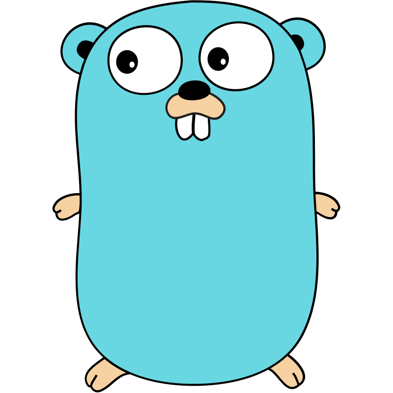

Jeux vidéo, websocket & binaire
du temps réel efficace dans le navigateur
Qu'est-ce que les Websocket ? 🧦
Vous en avez déjà utilisé !

Connexion persistante et bidirectionelle

Le protocol

Handshake 🤝

Communication texte 📝

C'est cool ! Ça va vite !
Peut-on faire mieux ?
Parlons optimisation ⚡️
Message JSON
{ "name": "client:new", "id": 42 }[123 32 34 110 97 109 101 34 58 32 34 99 108 105 101 110 116 34 44 32 34 105 100 34 58 32 52 50 32 125]01111011 00100000 00100010 01101110 01100001 01101101 01100101 00100010 00111010 00100000 00100010 01100011 01101100 01101001 01100101 01101110 01110100 00100010 00101100 00100000 00100010 01101001 01100100 00100010 00111010 00100000 00110100 00110010 00100000 0111110134 charactères / 34 octets
Parlons directement binaire ! 🤖
Représentation numérique
Mon information
{ "name": "client:new", "id": 42 }[client:new, 42][messageName, clientId]
Indexer les messages
| Name | Id |
|---|---|
| client:new | 1 |
| client:left | 2 |
| client:name | 3 |
| game:new | 4 |
| ... | |
[client:new, clientId][1, 42]00000001 001010102 octets
Plus complexe ...
{
"name": "player:position",
"id": 42,
"x": 3466,
"y": 6046
}[player:position, clientId, X, Y][5, 42, 3466, 6046]00000101 00101010 00001101 10001010 00010111 100111106 octets
La réception 📡
00000111 00101010 00000001Décodage du premier octet
000001117player:killDécodage du reste du message
[player:kill, killerID, killedID]00000111 00101010 00000001[7, 42, 1]"Player 42 killed player 1"Codons un Miro ! 🎉
Encodeur / Décodeur

L'interface Codec
type Codec interface {
encode(buffer *bytes.Buffer, data any)
decode(buffer *bytes.Buffer) any
}Codec élémentaire : entier sur 1 octet
type Int8Codec struct {}
// Encode un entier de 0 à 255
func (c *Int8Codec) encode(buf *bytes.Buffer, data any) {
buf.Write([]byte{data.(uint8)})
}
func (c *Int8Codec) decode(buf *bytes.Buffer) any {
return buf.Next(1)[0]
}Codec élémentaire : entier sur 2 octets
type Int16Codec struct {}
// Encode un entier de 0 à 65535
func (c *Int16Codec) encode(buf *bytes.Buffer, data any) {
b := make([]byte, 2)
binary.BigEndian.PutUint16(b[0:], data.(uint16))
buf.Write(b)
}
func (c *Int16Codec) decode(buf *bytes.Buffer) any {
return binary.BigEndian.Uint16(buf.Next(2)[0:])
}Codec composite
type PositionCodec struct {
int8Codec *Int8Codec
int16Codec *Int16Codec
}
// Position du client
type ClientPosition struct {
Id uint8
X uint16
Y uint16
}
// Encode une ClientPosition dans le buffer
func (c *PositionCodec) encode(buf *bytes.Buffer, data any) {
cp := data.(ClientPosition)
c.int8Codec.encode(buf, cp.Id) // + Id sur 1 octet
c.int16Codec.encode(buf, cp.X) // + X sur 2 octet
c.int16Codec.encode(buf, cp.Y) // + Y sur 2 octet
}
// Décode une ClientPosition à partir des valeurs du buffer
func (c *PositionCodec) decode(buf *bytes.Buffer) any {
return ClientPosition{
Id: c.int8Codec.decode(buf).(uint8), // octet 1
X: c.int16Codec.decode(buf).(uint16), // octet 2 et 3
Y: c.int16Codec.decode(buf).(uint16), // octet 3 et 4
}
}
type BinaryEncoder struct {
idCodec Int8Codec // Id des messages
codecsByName map[string]*RegisteredCodec // Encodage
codecsById map[uint8]*RegisteredCodec // Décodage
}
type RegisteredCodec struct {
Id uint8 // 5
Name string // "client:position"
Handler Codec // PositionCodec
}func (e BinaryEncoder) Encode(message Message) []byte {
var buffer bytes.Buffer // 1. Nouveau Buffer vide
// 2. Récupère le bon codec pour mon message
codec := e.codecsByName[message.Name]
// 3. Encode l'ID sur le premier octet
e.idCodec.encode(&buffer, codec.Id)
// 4. Encode le reste des données via le codec adapté
codec.Handler.encode(&buffer, message.Data)
return buffer.Bytes() // 5. Retourne les octets
}func (e BinaryEncoder) Decode(data []byte) Message {
// 1. Buffer contenant les octets reçus :
var buffer = bytes.NewBuffer(data)
// 2. Décodage de l'ID dans le premier octet :
id := e.idCodec.decode(buffer)
// 3. Récupère le bon codec pour ce message :
codec := e.codecsById[id]
// 5. Retour un Message complet 🎉 :
return Message{
Name: codec.Name,
// 4. Décode le reste des données via le codec :
Data: codec.Handler.decode(buffer),
}
}Me liste des messages !
codec.CreateBinaryEncoder([]codec.RegisteredCodec{
{0, "me:id", codec.Int8Codec{}},
{1, "me:name", codec.StringCodec{}},
{2, "me:position", codec.CreatePositionCodec()},
{3, "client:add", codec.CreateClientAddCodec()},
{4, "client:remove", codec.Int8Codec{}},
{5, "client:name", codec.CreateClientNameCodec()},
{6, "client:position", codec.CreatePositionCodec()},
})go get gorilla/websocket
func (s *Server) Handler(w http.ResponseWriter, r *http.Request) {
socket, err := server.upgrader.Upgrade(w, r, nil)
client := s.createClient(socket)
go client.run(s)
}
http.HandleFunc("/ws", server.Handler)// Récéption des messages du client
func (c *Client) run(server *Server) {
for {
// (type int, p []byte, err error)
_, data, err := c.Socket.ReadMessage()
// Gère une éventuelle erreur
if err != nil { /* Close socket */ }
// Publie une message cleint dans le channel
server.in <- ClientMessage{
client: c,
// Décode la donnée via le BinaryEncoder
message: c.encoder.Decode(data)
}
}
}// Goroutine du channel
func (s *Server) Run() {
for {
cm := <-s.in
s.HandleClientMessage(cm.client, cm.message)
}
}// Traitement des messages client
func (s *Server) HandleClientMessage(c *Client, m codec.Message) {
switch m.Name {
case "me:position":
// Met à jour la position du client :
c.setPosition(m.Data.(codec.Position))
// Envoie la nouvelle position à tous les clients :
s.writeAll(codec.Message{
Name: "client:position",
Data: codec.ClientPosition{c.id, c.x, c.y},
})
}
case "me:name":
// [Mise à jour et envoi du nom ...]
}Broadcast
func (server Server) writeAll(message codec.Message) {
// Encode le message en binaire :
bytes := server.encoder.Encode(message)
for _, c := range server.clients {
// Envoi les octets à chaque client :
c.Socket.write(bytes)
}
}Coté navigateur, en javascript :
github.com/Tom32i/netcodenew BinaryEncoder([
/*0*/['me:id', new Int8Codec()],
/*1*/['me:name', new StringCodec()],
/*2*/['me:position', new PositionCodec()],
/*3*/['client:add', new ClientAddCodec()],
/*4*/['client:remove', new Int8Codec()],
/*5*/['client:name', new ClientNameCodec()],
/*6*/['client:position', new PositionCodec()],
])Demo time ! ✨
go.tom32i.fr
Merci !🙏
Avec du texte
{
"name": "player:name",
"id": 42,
"value": "Tom32i",
}[id, clientId, length, T, o, m, 3, 2, i][6, 42, 6, 84, 111, 109, 51, 50, 105]00000110 00101010 00000110 01010100 01101111 01101101 00110011 00110010 011010019 octets